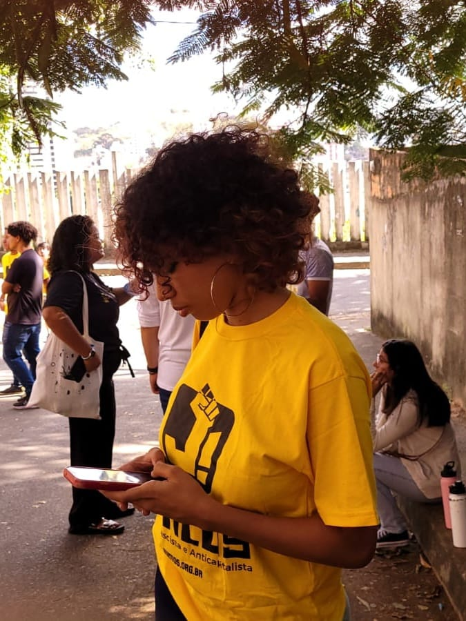
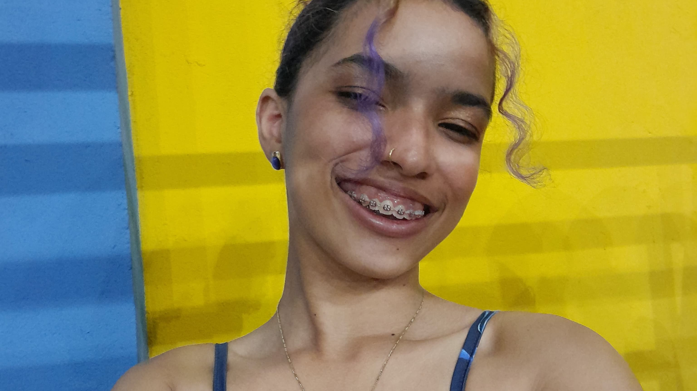
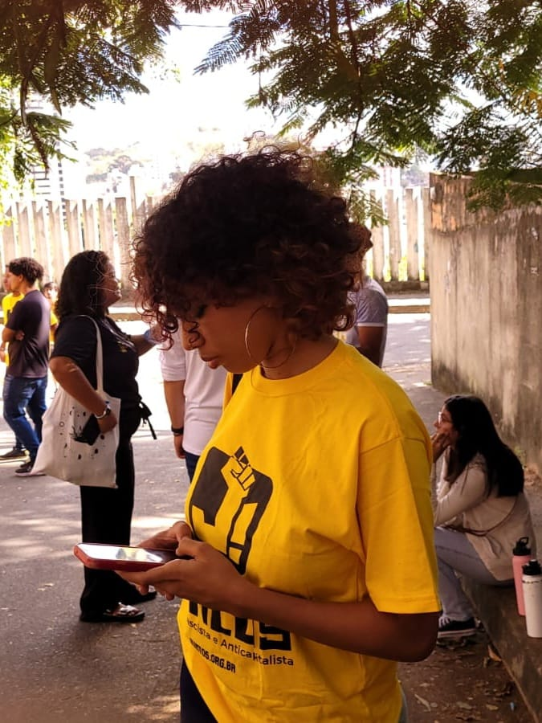
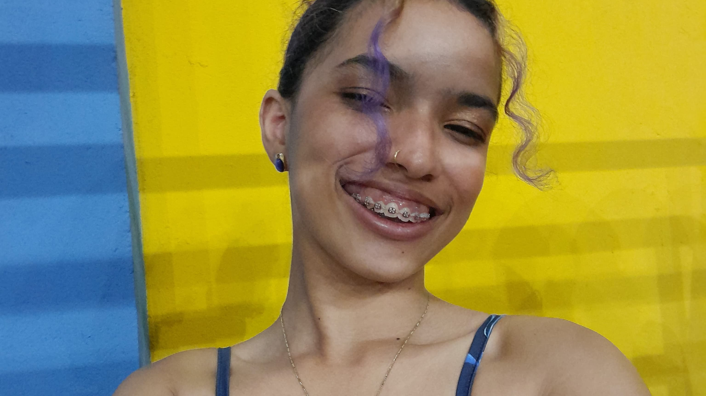

Sobre mim
Me chamo Emanuelle Alves , tenho 18 anos e estudo no IFRN - Campus Ceará-Mirim no curso técnico de informática. Desde muito nova quis entrar no IF, principalmente quando ouvia meus primos falando sobre seus cursos e sobre as experiências num geral. Atualmente estou dando continuidade em um projeto chamado PYGREEN, o qual visa ensinar estudantes de escola pública a lidar com tecnologia, seja aprendendo a usar um mouse ou a programar.